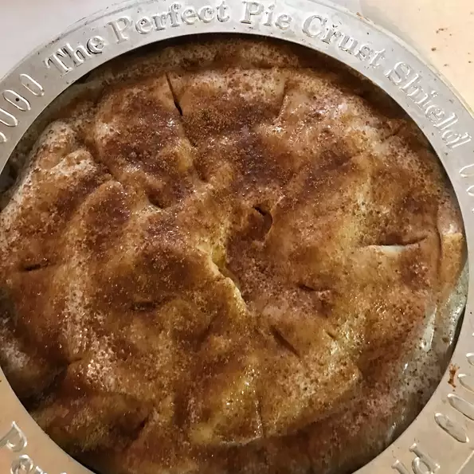

Description
This is a sweet, tart and delicious apple pie, Guaranteed to please.
Apple pie: American icon, most popular pie, and the
ONE dessert everyone has to make for Thanksgiving.
With its flaky, buttery crust; tart-sweet apples,
and wonderful cinnamon-y aroma, a slice of warm apple
pie is the perfect end to any repast, from casual lunch to
elegant dinner.
An Apple Pie should be sweet but never cloying, with a bare hint of cinnamon—this is an apple pie,
after all, not a cinnamon pie. Finally, it should taste overwhelmingly of fresh apples, with a
bright, clean flavor.
Ingredients
- ¾ cup white sugar
- 2 tablespoons all-purpose flour
- ½ teaspoon ground cinnamon
- ¼ teaspoon ground nutmeg
- ½ teaspoon lemon zest
- 7 cups thinly sliced apples
- 2 teaspoons lemon juice
- 1 tablespoon butter
- 1 recipe pastry for a 9 inch double crust pie
- 4 tablespoons milk (Optional)
Steps
- Preheat oven to 425 degrees F (220 degrees C).
- Mix together the sugar, flour, cinnamon, nutmeg and lemon peel.
- Line one crust in a 9-inch deep-dish pie pan. Layer 1/3 of apples into pie crust. Sprinkle with sugar mixture and repeat until done. Sprinkle with lemon juice and dot with butter.
- Place second pie crust on top of filling and flute the edges. Cut vents in top crust and brush with milk for a glazed appearance if desired.
- Bake at 425 degrees F (220 degrees C) for 40 to 50 minutes.
RETURN TO MAIN PAGE